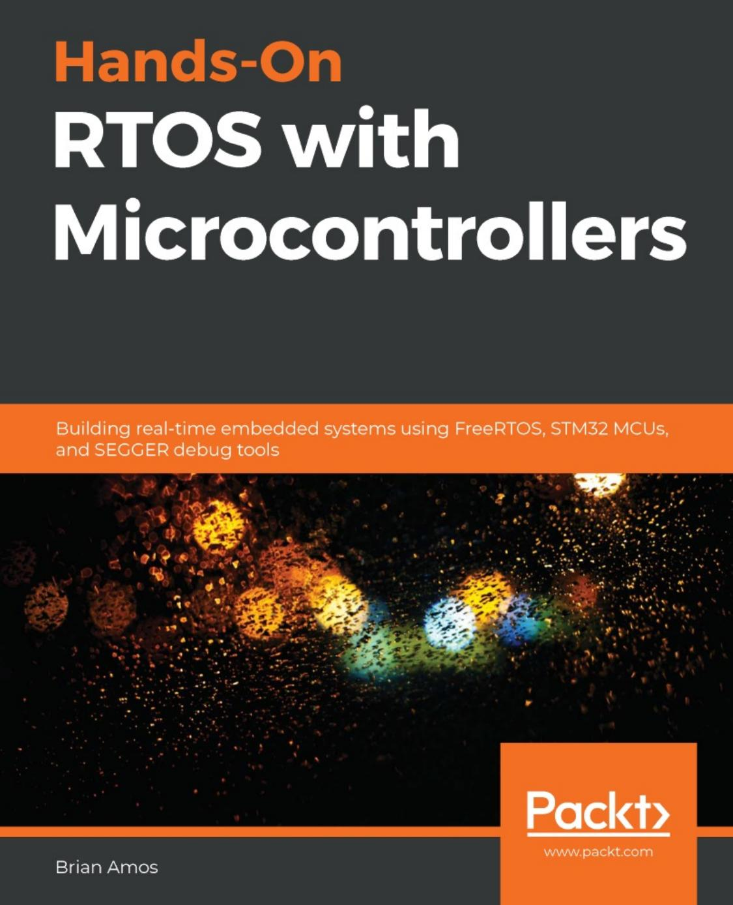
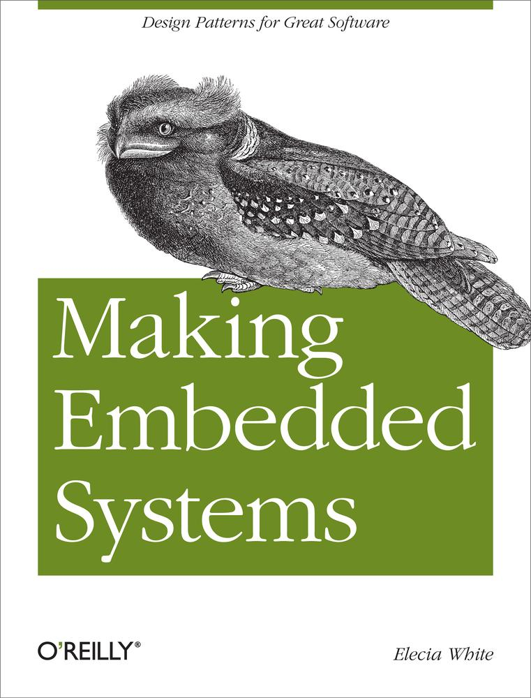
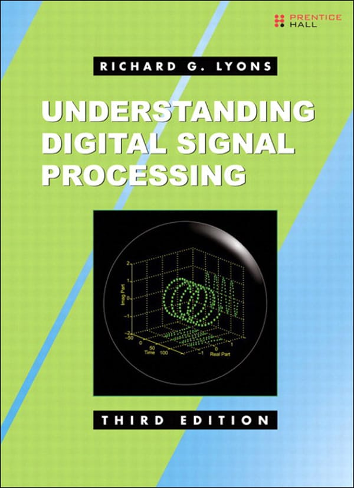
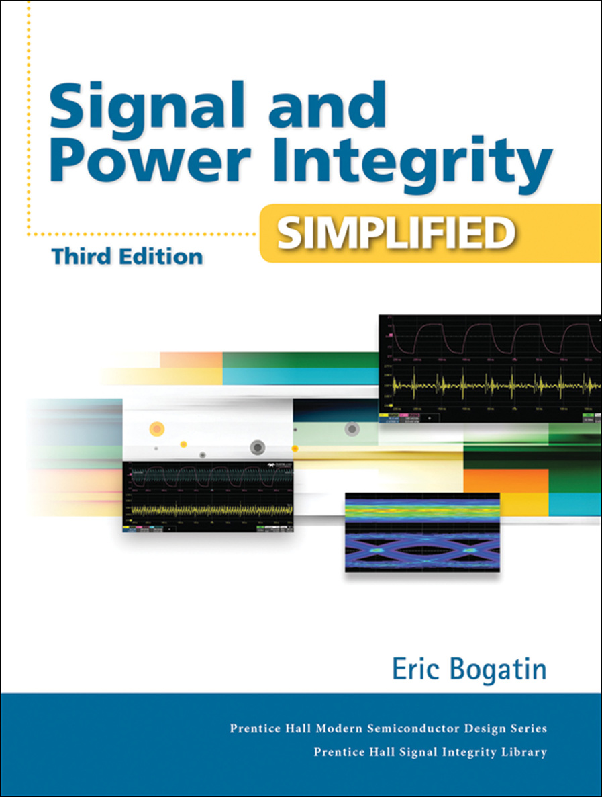

Hi, I'm Gašpar Dončević and it looks like you've stumbled on my work in progress webpage. It's been a while since i've done something in html so come back in a couple of days to see the finished site.
I got my electrical enigneering masters degree in the summer of 2024. I specialized in electrical and computer engineering
with sprinkled in classes in biomedical engineering. That means that I've seen almost most of it all, from sensor design, instrumentation,
filter design, PCB design, embedded systems programing, Digital signal processing to a bit about anatomy and human locomotion.
| book cover | book title | book author |
|---|---|---|
|  | Hands-On FreeRTOS with Microcontrolers | Brian Amos |
|  | Making Embedded Systems | Elecia White |
|  | Understanding Digital Signal Processing | Richard G. Lyons |
|  | Signal and power integrity simplified | Eric Bogatin |
Designed by me.